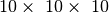
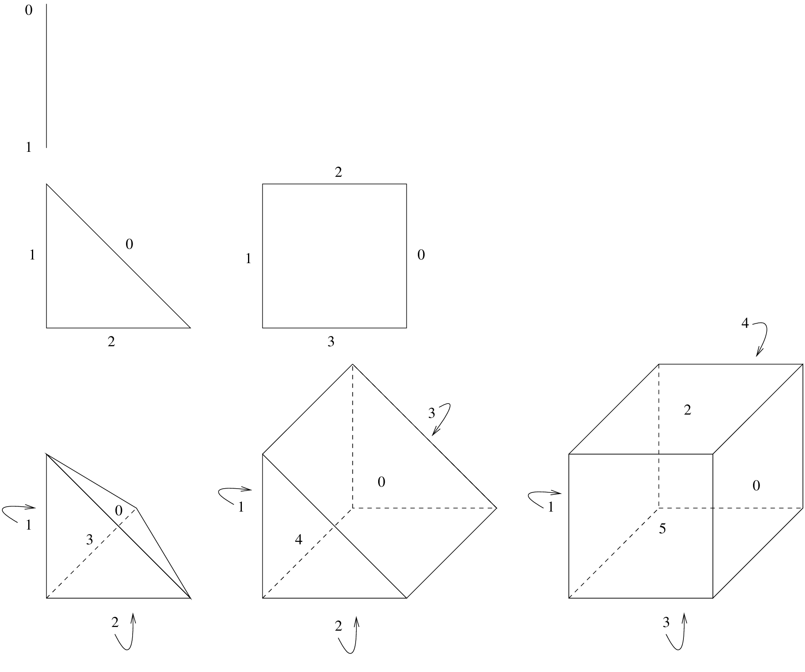

<!DOCTYPE html PUBLIC "-//W3C//DTD XHTML 1.0 Transitional//EN"
  "http://www.w3.org/TR/xhtml1/DTD/xhtml1-transitional.dtd">


<html xmlns="http://www.w3.org/1999/xhtml">
  <head>
    <meta http-equiv="Content-Type" content="text/html; charset=utf-8" />
    
    <title>メッシュ生成 &mdash; GetFEM++</title>
    
    <link rel="stylesheet" href="../_static/getfem.css" type="text/css" />
    <link rel="stylesheet" href="../_static/pygments.css" type="text/css" />
    
    <script type="text/javascript">
      var DOCUMENTATION_OPTIONS = {
        URL_ROOT:    '../',
        VERSION:     '5.3',
        COLLAPSE_INDEX: false,
        FILE_SUFFIX: '.html',
        HAS_SOURCE:  false
      };
    </script>
    <script type="text/javascript" src="../_static/jquery.js"></script>
    <script type="text/javascript" src="../_static/underscore.js"></script>
    <script type="text/javascript" src="../_static/doctools.js"></script>
    <script type="text/javascript" src="../_static/translations.js"></script>
    <link rel="shortcut icon" href="../_static/favicon.ico"/>
    <link rel="author" title="このドキュメントについて" href="../about.html" />
    <link rel="copyright" title="著作権" href="../copyright.html" />
    <link rel="top" title="GetFEM++" href="../index.html" />
    <link rel="up" title="ユーザドキュメント" href="index.html" />
    <link rel="next" title="メッシュ上に有限要素法を構築します" href="bfem.html" />
    <link rel="prev" title="キャッチエラー" href="catch.html" />
    <link rel="shortcut icon" type="image/png" href="../_static/icon.png" />
 

  </head>
  <body>
    <div class="related">
      <h3>ナビゲーション</h3>
      <ul>
        <li class="right" style="margin-right: 10px">
          <a href="../genindex.html" title="総合索引"
             accesskey="I">索引</a></li>
        <li class="right" >
          <a href="bfem.html" title="メッシュ上に有限要素法を構築します"
             accesskey="N">次へ</a> |</li>
        <li class="right" >
          <a href="catch.html" title="キャッチエラー"
             accesskey="P">前へ</a> |</li>
        <li><a href="https://savannah.nongnu.org/projects/getfem" </li></a>
        <li><a href="../index.html">GetFEM++</a> &raquo;</li>

          <li><a href="index.html" accesskey="U">ユーザドキュメント</a> &raquo;</li> 
      </ul>
    </div>  

    <div class="document">
      <div class="documentwrapper">
        <div class="bodywrapper">
          <div class="body">
            
  <div class="section" id="build-a-mesh">
<span id="ud-bmesh"></span><h1>メッシュ生成<a class="headerlink" href="#build-a-mesh" title="このヘッドラインへのパーマリンク">¶</a></h1>
<p>前置きとして、 <em>GetFEM++</em> <a class="reference external" href="http://getfem.org/getfem_reference/index.html">用語</a> に関する簡単な説明をします。</p>
<p><em>GetFEM++</em> はファイル <tt class="file docutils literal"><span class="pre">getfem/bgeot_mesh_structure.h</span></tt> と <tt class="file docutils literal"><span class="pre">getfem/getfem_mesh.h</span></tt> で定義されるメッシュを格納する固有の構造を持っています。</p>
<p>このオブジェクトは、異なる次元の要素を混合しても、任意の次元に任意の要素を格納できます。</p>
<p>複雑なジオメトリをメッシュ化するには、 <em>GetFEM++</em> には（非常に）実験的なメッシング手順しかありません。しかし、どんなフォーマットからでもメッシュを簡単に読み込むことができます（いくつかの手順は、 <tt class="file docutils literal"><span class="pre">getfem/getfem_import.h</span></tt> にあり、いくつかのパブリックドメインメッシュジェネレータからメッシュをロードします）。</p>
<p>構造体 <tt class="docutils literal"><span class="pre">getfem::mesh</span></tt> は、境界や要素の集合など、メッシュの領域に関する記述を含むこともできます。 これは、凸面と凸面のコンテナ <tt class="docutils literal"><span class="pre">getfem::mesh_region</span></tt> を介して処理されます。</p>
<div class="section" id="add-an-element-to-a-mesh">
<h2>メッシュに要素を追加する<a class="headerlink" href="#add-an-element-to-a-mesh" title="このヘッドラインへのパーマリンク">¶</a></h2>
<p>変数 <tt class="docutils literal"><span class="pre">mymesh</span></tt> が次のように定義されているとします。</p>
<div class="highlight-c++"><div class="highlight"><pre><span class="n">getfem</span><span class="o">::</span><span class="n">mesh</span> <span class="n">mymesh</span><span class="p">;</span>
</pre></div>
</div>
<p>このメッシュに新しい要素を挿入するには、ポイントのリストから追加する方法と既存のポイントのインデックスのリストから追加する2つの方法があります。</p>
<p>メッシュ上に新しい点を入力するには、次のメソッドを使用してください。</p>
<div class="highlight-c++"><div class="highlight"><pre><span class="n">i</span> <span class="o">=</span> <span class="n">mymesh</span><span class="p">.</span><span class="n">add_point</span><span class="p">(</span><span class="n">pt</span><span class="p">);</span>
</pre></div>
</div>
<p>ここで、 <tt class="docutils literal"><span class="pre">pt</span></tt> は <tt class="docutils literal"><span class="pre">bgeot::base_node</span></tt> 型です。 インデックス <tt class="docutils literal"><span class="pre">i</span></tt> は、メッシュ上のこのポイントのインデックスです。 すでにメッシュ内にポイントが存在する場合、新しいポイントは挿入されず、既存のポイントのインデックスが返されます。 メッシュには、その点の次元である主次元があります。 同じメッシュ内に異なる次元の点を持つことはできません。</p>
<p>新しい要素をメッシュに追加する最も基本的な関数は次の通りです。</p>
<div class="highlight-c++"><div class="highlight"><pre><span class="n">j</span> <span class="o">=</span> <span class="n">mymesh</span><span class="p">.</span><span class="n">add_convex</span><span class="p">(</span><span class="n">pgt</span><span class="p">,</span> <span class="n">it</span><span class="p">);</span>
</pre></div>
</div>
<p>これは、 <tt class="docutils literal"><span class="pre">bgeot::pgeometric_trans</span></tt> 型の <tt class="docutils literal"><span class="pre">pgt</span></tt> （基本的にはbg_gt型のインスタンスへのポインタ）を持つテンプレート関数であり、既に存在する点のインデックスのリスト上の反復子です。 たとえば、3次元メッシュに新しい3角形を追加する必要がある場合、最初に3つの点のインデックスを持つ配列を定義する必要があります</p>
<div class="highlight-c++"><div class="highlight"><pre><span class="n">std</span><span class="o">::</span><span class="n">vector</span><span class="o">&lt;</span><span class="n">bgeot</span><span class="o">::</span><span class="n">size_type</span><span class="o">&gt;</span> <span class="n">ind</span><span class="p">(</span><span class="mi">3</span><span class="p">);</span>
<span class="n">ind</span><span class="p">[</span><span class="mi">0</span><span class="p">]</span> <span class="o">=</span> <span class="n">mymesh</span><span class="p">.</span><span class="n">add_point</span><span class="p">(</span><span class="n">bgeot</span><span class="o">::</span><span class="n">base_node</span><span class="p">(</span><span class="mf">0.0</span><span class="p">,</span> <span class="mf">0.0</span><span class="p">,</span> <span class="mf">0.0</span><span class="p">));</span>
<span class="n">ind</span><span class="p">[</span><span class="mi">1</span><span class="p">]</span> <span class="o">=</span> <span class="n">mymesh</span><span class="p">.</span><span class="n">add_point</span><span class="p">(</span><span class="n">bgeot</span><span class="o">::</span><span class="n">base_node</span><span class="p">(</span><span class="mf">0.0</span><span class="p">,</span> <span class="mf">1.0</span><span class="p">,</span> <span class="mf">0.0</span><span class="p">));</span>
<span class="n">ind</span><span class="p">[</span><span class="mi">2</span><span class="p">]</span> <span class="o">=</span> <span class="n">mymesh</span><span class="p">.</span><span class="n">add_point</span><span class="p">(</span><span class="n">bgeot</span><span class="o">::</span><span class="n">base_node</span><span class="p">(</span><span class="mf">0.0</span><span class="p">,</span> <span class="mf">0.0</span><span class="p">,</span> <span class="mf">1.0</span><span class="p">));</span>
</pre></div>
</div>
<p>要素の追加は次のように行います。</p>
<div class="highlight-c++"><div class="highlight"><pre><span class="n">mymesh</span><span class="p">.</span><span class="n">add_convex</span><span class="p">(</span><span class="n">bgeot</span><span class="o">::</span><span class="n">simplex_geotrans</span><span class="p">(</span><span class="mi">2</span><span class="p">,</span><span class="mi">1</span><span class="p">),</span> <span class="n">ind</span><span class="p">.</span><span class="n">begin</span><span class="p">());</span>
</pre></div>
</div>
<p>ここで <tt class="docutils literal"><span class="pre">bgeot::simplex_geotrans(N,1);</span></tt> は次元Nのシンプレックスのための通常の線形幾何変換を示します。</p>
<p>シンプレックスのために、以下のようにより特殊化された関数が存在します。</p>
<div class="highlight-c++"><div class="highlight"><pre><span class="n">mymesh</span><span class="p">.</span><span class="n">add_simplex</span><span class="p">(</span><span class="mi">2</span><span class="p">,</span> <span class="n">ind</span><span class="p">.</span><span class="n">begin</span><span class="p">());</span>
</pre></div>
</div>
<p>次の関数を使ってポイントのリストを直接与えることも可能です。</p>
<div class="highlight-c++"><div class="highlight"><pre><span class="n">mymesh</span><span class="p">.</span><span class="n">add_convex_by_points</span><span class="p">(</span><span class="n">pgt</span><span class="p">,</span> <span class="n">itp</span><span class="p">);</span>
</pre></div>
</div>
<p>ここで <tt class="docutils literal"><span class="pre">itp</span></tt> は点の配列のイテレータです。 例えば、次のような場合、</p>
<div class="highlight-c++"><div class="highlight"><pre><span class="n">std</span><span class="o">::</span><span class="n">vector</span><span class="o">&lt;</span><span class="n">bgeot</span><span class="o">::</span><span class="n">base_node</span><span class="o">&gt;</span> <span class="n">pts</span><span class="p">(</span><span class="mi">3</span><span class="p">);</span>
<span class="n">pts</span><span class="p">[</span><span class="mi">0</span><span class="p">]</span> <span class="o">=</span> <span class="n">bgeot</span><span class="o">::</span><span class="n">base_node</span><span class="p">(</span><span class="mf">0.0</span><span class="p">,</span> <span class="mf">0.0</span><span class="p">,</span> <span class="mf">0.0</span><span class="p">);</span>
<span class="n">pts</span><span class="p">[</span><span class="mi">1</span><span class="p">]</span> <span class="o">=</span> <span class="n">bgeot</span><span class="o">::</span><span class="n">base_node</span><span class="p">(</span><span class="mf">0.0</span><span class="p">,</span> <span class="mf">1.0</span><span class="p">,</span> <span class="mf">0.0</span><span class="p">);</span>
<span class="n">pts</span><span class="p">[</span><span class="mi">2</span><span class="p">]</span> <span class="o">=</span> <span class="n">bgeot</span><span class="o">::</span><span class="n">base_node</span><span class="p">(</span><span class="mf">0.0</span><span class="p">,</span> <span class="mf">0.0</span><span class="p">,</span> <span class="mf">1.0</span><span class="p">);</span>
<span class="n">mymesh</span><span class="p">.</span><span class="n">add_convex_by_points</span><span class="p">(</span><span class="n">bgeot</span><span class="o">::</span><span class="n">simplex_geotrans</span><span class="p">(</span><span class="mi">2</span><span class="p">,</span><span class="mi">1</span><span class="p">),</span> <span class="n">pts</span><span class="p">.</span><span class="n">begin</span><span class="p">());</span>
</pre></div>
</div>
<p>このように使用することも可能です。</p>
<div class="highlight-c++"><div class="highlight"><pre><span class="n">mymesh</span><span class="p">.</span><span class="n">add_simplex_by_points</span><span class="p">(</span><span class="mi">2</span><span class="p">,</span> <span class="n">pts</span><span class="p">.</span><span class="n">begin</span><span class="p">());</span>
</pre></div>
</div>
<p>シンプレックス以外の要素についても、 <tt class="docutils literal"><span class="pre">mymesh.add_convex_by_points</span></tt> や <tt class="docutils literal"><span class="pre">mymesh.add_convex</span></tt> で適切な幾何学的変換と共に使用することが可能です。</p>
<ul class="simple">
<li><p class="first"><tt class="docutils literal"><span class="pre">bgeot::parallelepiped_geotrans(N,</span> <span class="pre">1)</span></tt> は次元 <tt class="docutils literal"><span class="pre">N</span></tt> の平行6面体（ <tt class="docutils literal"><span class="pre">N</span> <span class="pre">=</span> <span class="pre">2</span></tt> の場合は4辺形、 <tt class="docutils literal"><span class="pre">N</span> <span class="pre">=</span> <span class="pre">3</span></tt> の場合は6面体、...）</p>
</li>
<li><p class="first"><tt class="docutils literal"><span class="pre">bgeot::prism_geotrans(N,</span> <span class="pre">1)</span></tt> は次元 <tt class="docutils literal"><span class="pre">N</span></tt> のプリズムの通常の変換を表しています（通常のプリズムは <tt class="docutils literal"><span class="pre">N</span> <span class="pre">=</span> <span class="pre">3</span></tt> です。一般化されたプリズムは、次元 <tt class="docutils literal"><span class="pre">N-1</span></tt> のシンプレックスとセグメント）</p>
</li>
</ul>
<p>特殊化された関数も存在します</p>
<div class="highlight-c++"><div class="highlight"><pre><span class="n">mymesh</span><span class="p">.</span><span class="n">add_parallelepiped</span><span class="p">(</span><span class="n">N</span><span class="p">,</span> <span class="n">it</span><span class="p">);</span>
<span class="n">mymesh</span><span class="p">.</span><span class="n">add_parallelepiped_by_points</span><span class="p">(</span><span class="n">N</span><span class="p">,</span> <span class="n">itp</span><span class="p">);</span>
<span class="n">mymesh</span><span class="p">.</span><span class="n">add_prism</span><span class="p">(</span><span class="n">N</span><span class="p">,</span> <span class="n">it</span><span class="p">);</span>
<span class="n">mymesh</span><span class="p">.</span><span class="n">add_prism_by_points</span><span class="p">(</span><span class="n">N</span><span class="p">,</span> <span class="n">itp</span><span class="p">);</span>
</pre></div>
</div>
<p>点の配列における点の順序は、シンプレックス要素にとっては重要ではありません(あなたがシンプレックスの向きを気にする場合を除いては)。他の要素については、  <a class="reference internal" href="#ud-fig-elem"><em>通常の1次要素の頂点数</em></a>  (1次要素) で示される頂点の順序を守ることが重要です。</p>
<div class="figure align-center" id="ud-fig-elem">
<a class="reference internal image-reference" href="../_images/getfemuserelem.png"></a>
<p class="caption">通常の1次要素の頂点数</p>
</div>
<p>より高次の変換を含む汎用的な規則は、頂点数が対応するLagrange有限要素法(  <a class="reference internal" href="appendixA.html#ud-appendixa"><em>付録A.有限要素法リスト</em></a> を参照)の1つに従うことであることに注意してください。</p>
</div>
<div class="section" id="remove-an-element-from-a-mesh">
<h2>メッシュから要素を削除する<a class="headerlink" href="#remove-an-element-from-a-mesh" title="このヘッドラインへのパーマリンク">¶</a></h2>
<p>メッシュから要素を削除するには、単純に</p>
<div class="highlight-c++"><div class="highlight"><pre><span class="n">mymesh</span><span class="p">.</span><span class="n">sup_convex</span><span class="p">(</span><span class="n">i</span><span class="p">);</span>
</pre></div>
</div>
<p>ここで、 <tt class="docutils literal"><span class="pre">i</span></tt> は要素のインデックスです。</p>
</div>
<div class="section" id="simple-structured-meshes">
<h2>シンプルな構造化メッシュ<a class="headerlink" href="#simple-structured-meshes" title="このヘッドラインへのパーマリンク">¶</a></h2>
<p>平行6面体の領域の場合、 <tt class="file docutils literal"><span class="pre">getfem/getfem_regular_meshes.h</span></tt> で定義されている3つの関数からシンプレックス、平行6面体、またはプリズム要素を持つ構造化メッシュを得ることができます。</p>
<p>最も単純な関数は</p>
<div class="highlight-c++"><div class="highlight"><pre><span class="kt">void</span> <span class="nf">regular_unit_mesh</span><span class="p">(</span><span class="n">mesh</span><span class="o">&amp;</span> <span class="n">m</span><span class="p">,</span> <span class="n">std</span><span class="o">::</span><span class="n">vector</span><span class="o">&lt;</span><span class="n">size_type</span><span class="o">&gt;</span> <span class="n">nsubdiv</span><span class="p">,</span>
                       <span class="n">bgeot</span><span class="o">::</span><span class="n">pgeometric_trans</span> <span class="n">pgt</span><span class="p">,</span> <span class="kt">bool</span> <span class="n">noised</span> <span class="o">=</span> <span class="nb">false</span><span class="p">);</span>
</pre></div>
</div>
<p>メッシュ <tt class="docutils literal"><span class="pre">m</span></tt> をシンプル/平行6面体/プリズムの規則的なメッシュで塗りつぶします（ <tt class="docutils literal"><span class="pre">pgt</span></tt> の値に応じて）。 各方向のセル数は <tt class="docutils literal"><span class="pre">nsubdiv</span></tt> で与えられます。 次の例では、単位正方形に2次3角形のメッシュを作成します（メッシュは後でスケーリングして変換できます）</p>
<div class="highlight-c++"><div class="highlight"><pre><span class="n">std</span><span class="o">::</span><span class="n">vector</span><span class="o">&lt;</span><span class="n">getfem</span><span class="o">::</span><span class="n">size_type</span><span class="o">&gt;</span> <span class="n">nsubdiv</span><span class="p">(</span><span class="mi">2</span><span class="p">);</span>
<span class="n">nsubdiv</span><span class="p">[</span><span class="mi">0</span><span class="p">]</span> <span class="o">=</span> <span class="mi">10</span><span class="p">;</span> <span class="n">nsubdiv</span><span class="p">[</span><span class="mi">1</span><span class="p">]</span> <span class="o">=</span> <span class="mi">20</span><span class="p">;</span>
<span class="n">regular_unit_mesh</span><span class="p">(</span><span class="n">m</span><span class="p">,</span> <span class="n">nsubdiv</span><span class="p">,</span> <span class="n">bgeot</span><span class="o">::</span><span class="n">simplex_geotrans</span><span class="p">(</span><span class="mi">2</span><span class="p">,</span><span class="mi">2</span><span class="p">));</span>
</pre></div>
</div>
<p>もっと特殊な規則的なメッシュ関数も利用できます</p>
<div class="highlight-c++"><div class="highlight"><pre><span class="n">getfem</span><span class="o">::</span><span class="n">parallelepiped_regular_simplex_mesh</span><span class="p">(</span><span class="n">mymesh</span><span class="p">,</span> <span class="n">N</span><span class="p">,</span> <span class="n">org</span><span class="p">,</span> <span class="n">ivect</span><span class="p">,</span> <span class="n">iref</span><span class="p">);</span>
<span class="n">getfem</span><span class="o">::</span><span class="n">parallelepiped_regular_prism_mesh</span><span class="p">(</span><span class="n">mymesh</span><span class="p">,</span> <span class="n">N</span><span class="p">,</span> <span class="n">org</span><span class="p">,</span> <span class="n">ivect</span><span class="p">,</span> <span class="n">iref</span><span class="p">);</span>
<span class="n">getfem</span><span class="o">::</span><span class="n">parallelepiped_regular_pyramid_mesh</span><span class="p">(</span><span class="n">mymesh</span><span class="p">,</span> <span class="n">N</span><span class="p">,</span> <span class="n">org</span><span class="p">,</span> <span class="n">ivect</span><span class="p">,</span> <span class="n">iref</span><span class="p">);</span>
<span class="n">getfem</span><span class="o">::</span><span class="n">parallelepiped_regular_mesh</span><span class="p">(</span><span class="n">mymesh</span><span class="p">,</span> <span class="n">N</span><span class="p">,</span> <span class="n">org</span><span class="p">,</span> <span class="n">ivect</span><span class="p">,</span> <span class="n">iref</span><span class="p">);</span>
</pre></div>
</div>
<p>ここで <tt class="docutils literal"><span class="pre">mymesh</span></tt> は構造化されたメッシュが構築されるメッシュ変数で、 <tt class="docutils literal"><span class="pre">N</span></tt> は次元です（シンプレックスの場合は4、プリズムの場合は5、平行6面体の場合は無制限です）。 <tt class="docutils literal"><span class="pre">org</span></tt> を <tt class="docutils literal"><span class="pre">bgeot::base_node</span></tt> と設定し、メッシュの起点を表します。  <tt class="docutils literal"><span class="pre">ivect</span></tt> は平行四辺形の領域を構築するための <tt class="docutils literal"><span class="pre">N</span></tt> ベクトルの配列上のイテレータです。 <tt class="docutils literal"><span class="pre">iref</span></tt> は、 各方向の分割数を表す <tt class="docutils literal"><span class="pre">N</span></tt> の自然数の配列です。</p>
<p>例えば、  の単位立方体の4面体を持つメッシュを作成するには、次のように記述します</p>
<div class="highlight-c++"><div class="highlight"><pre><span class="n">getfem</span><span class="o">::</span><span class="n">mesh</span> <span class="n">mymesh</span><span class="p">;</span>
<span class="n">bgeot</span><span class="o">::</span><span class="n">base_node</span> <span class="n">org</span><span class="p">(</span><span class="mf">0.0</span><span class="p">,</span> <span class="mf">0.0</span><span class="p">,</span> <span class="mf">0.0</span><span class="p">);</span>
<span class="n">std</span><span class="o">::</span><span class="n">vector</span><span class="o">&lt;</span><span class="n">bgeot</span><span class="o">::</span><span class="n">base_small_vector</span><span class="o">&gt;</span> <span class="n">vect</span><span class="p">(</span><span class="mi">3</span><span class="p">);</span>
<span class="n">vect</span><span class="p">[</span><span class="mi">0</span><span class="p">]</span> <span class="o">=</span> <span class="n">bgeot</span><span class="o">::</span><span class="n">base_small_vector</span><span class="p">(</span><span class="mf">0.1</span><span class="p">,</span> <span class="mf">0.0</span><span class="p">,</span> <span class="mf">0.0</span><span class="p">);</span>
<span class="n">vect</span><span class="p">[</span><span class="mi">1</span><span class="p">]</span> <span class="o">=</span> <span class="n">bgeot</span><span class="o">::</span><span class="n">base_small_vector</span><span class="p">(</span><span class="mf">0.0</span><span class="p">,</span> <span class="mf">0.1</span><span class="p">,</span> <span class="mf">0.0</span><span class="p">);</span>
<span class="n">vect</span><span class="p">[</span><span class="mi">2</span><span class="p">]</span> <span class="o">=</span> <span class="n">bgeot</span><span class="o">::</span><span class="n">base_small_vector</span><span class="p">(</span><span class="mf">0.0</span><span class="p">,</span> <span class="mf">0.0</span><span class="p">,</span> <span class="mf">0.1</span><span class="p">);</span>
<span class="n">std</span><span class="o">::</span><span class="n">vector</span><span class="o">&lt;</span><span class="kt">int</span><span class="o">&gt;</span> <span class="n">ref</span><span class="p">(</span><span class="mi">3</span><span class="p">);</span>
<span class="n">ref</span><span class="p">[</span><span class="mi">0</span><span class="p">]</span> <span class="o">=</span> <span class="n">ref</span><span class="p">[</span><span class="mi">1</span><span class="p">]</span> <span class="o">=</span> <span class="n">ref</span><span class="p">[</span><span class="mi">2</span><span class="p">]</span> <span class="o">=</span> <span class="mi">10</span><span class="p">;</span>
<span class="n">getfem</span><span class="o">::</span><span class="n">parallelepiped_regular_simplex_mesh</span><span class="p">(</span><span class="n">mymesh</span><span class="p">,</span> <span class="mi">3</span><span class="p">,</span> <span class="n">org</span><span class="p">,</span> <span class="n">vect</span><span class="p">.</span><span class="n">begin</span><span class="p">(),</span> <span class="n">ref</span><span class="p">.</span><span class="n">begin</span><span class="p">());</span>
</pre></div>
</div>
<div class="admonition note">
<p class="first admonition-title">ノート</p>
<p class="last"><tt class="docutils literal"><span class="pre">base_node</span></tt> と <tt class="docutils literal"><span class="pre">base_small_vector</span></tt> はどちらも小さなベクトルクラス（16個以上の要素を格納できません）で、幾何用の点や幾何用のベクトルを記述するために使われます。 それらのメモリフットプリントは <tt class="docutils literal"><span class="pre">std::vector</span></tt> よりも小さくなっています。</p>
</div>
</div>
<div class="section" id="mesh-regions">
<span id="ud-mesh-regions"></span><h2>メッシュ領域<a class="headerlink" href="#mesh-regions" title="このヘッドラインへのパーマリンク">¶</a></h2>
<p>メッシュオブジェクトには、多くの <tt class="docutils literal"><span class="pre">getfem::mesh_region</span></tt> オブジェクト（ <tt class="file docutils literal"><span class="pre">getfem/getfem_mesh_region.h</span></tt> で宣言）を含めることができます。 これらのオブジェクトは、凸と凸面のセットのコンテナです。 それらは、境界を定義するため、または並列ソルバーのメッシュの区画などに使用されます。</p>
<div class="highlight-c++"><div class="highlight"><pre><span class="n">mymesh</span><span class="p">.</span><span class="n">region</span><span class="p">(</span><span class="mi">30</span><span class="p">).</span><span class="n">add</span><span class="p">(</span><span class="mi">2</span><span class="p">);</span>   <span class="c1">// adds convex 2 into region 30</span>
<span class="n">mymesh</span><span class="p">.</span><span class="n">region</span><span class="p">(</span><span class="mi">30</span><span class="p">).</span><span class="n">add</span><span class="p">(</span><span class="mi">3</span><span class="p">);</span>   <span class="c1">// adds convex 3 into region 30</span>
<span class="n">mymesh</span><span class="p">.</span><span class="n">region</span><span class="p">(</span><span class="mi">30</span><span class="p">).</span><span class="n">add</span><span class="p">(</span><span class="mi">4</span><span class="p">,</span><span class="mi">3</span><span class="p">);</span> <span class="c1">// adds face 3 of convex 4 into region 30</span>
<span class="n">mymesh</span><span class="p">.</span><span class="n">region</span><span class="p">(</span><span class="mi">30</span><span class="p">).</span><span class="n">sup</span><span class="p">(</span><span class="mi">3</span><span class="p">);</span>   <span class="c1">// Removes convex 3 from region 30</span>
<span class="n">mymesh</span><span class="p">.</span><span class="n">sup_convex</span><span class="p">(</span><span class="mi">4</span><span class="p">);</span>       <span class="c1">// Removes convex 4 from both the mesh and all the regions</span>
<span class="k">for</span> <span class="p">(</span><span class="n">getfem</span><span class="o">::</span><span class="n">mr_visitor</span> <span class="n">i</span><span class="p">(</span><span class="n">mymesh</span><span class="p">.</span><span class="n">region</span><span class="p">(</span><span class="mi">30</span><span class="p">));</span> <span class="o">!</span><span class="n">i</span><span class="p">.</span><span class="n">finished</span><span class="p">();</span> <span class="o">++</span><span class="n">i</span><span class="p">)</span> <span class="p">{</span>
  <span class="n">cout</span> <span class="o">&lt;&lt;</span> <span class="s">&quot;convex: &quot;</span> <span class="o">&lt;&lt;</span> <span class="n">i</span><span class="p">.</span><span class="n">cv</span><span class="p">()</span> <span class="o">&lt;&lt;</span> <span class="s">&quot; face:&quot;</span> <span class="o">&lt;&lt;</span> <span class="n">i</span><span class="p">.</span><span class="n">f</span><span class="p">()</span> <span class="o">&lt;&lt;</span> <span class="n">endl</span><span class="p">;</span>
<span class="p">}</span>
</pre></div>
</div>
</div>
<div class="section" id="methods-of-the-gf-m-object">
<h2><tt class="docutils literal"><span class="pre">getfem::mesh</span></tt> オブジェクトのメソッド<a class="headerlink" href="#methods-of-the-gf-m-object" title="このヘッドラインへのパーマリンク">¶</a></h2>
<p>リストは網羅的ではありません。</p>
<dl class="function">
<dt id="mymesh.dim">
<tt class="descclassname">mymesh.</tt><tt class="descname">dim</tt><big>(</big><big>)</big><a class="headerlink" href="#mymesh.dim" title="この定義へのパーマリンク">¶</a></dt>
<dd><p>メッシュの主次元。</p>
</dd></dl>

<dl class="function">
<dt id="mymesh.points_index">
<tt class="descclassname">mymesh.</tt><tt class="descname">points_index</tt><big>(</big><big>)</big><a class="headerlink" href="#mymesh.points_index" title="この定義へのパーマリンク">¶</a></dt>
<dd><p>メッシュの有効なポイントのすべてのインデックスを表す <tt class="docutils literal"><span class="pre">dal::bit_vector</span></tt> オブジェクトを返します（下記参照）。</p>
</dd></dl>

<dl class="function">
<dt>
<tt class="descname">mymesh.points()[i]</tt></dt>
<dd><p>インデックス <tt class="docutils literal"><span class="pre">i</span></tt> のポイントを与えます（<tt class="docutils literal"><span class="pre">bgeot::base_node</span></tt>）。</p>
</dd></dl>

<dl class="function">
<dt id="mymesh.convex_index">
<tt class="descclassname">mymesh.</tt><tt class="descname">convex_index</tt><big>(</big><big>)</big><a class="headerlink" href="#mymesh.convex_index" title="この定義へのパーマリンク">¶</a></dt>
<dd><p>メッシュの有効な要素のすべてのインデックスを表す <tt class="docutils literal"><span class="pre">dal::bit_vector</span></tt> オブジェクトを返します（下記参照）。</p>
</dd></dl>

<dl class="function">
<dt id="mymesh.structure_of_convex">
<tt class="descclassname">mymesh.</tt><tt class="descname">structure_of_convex</tt><big>(</big><em>i</em><big>)</big><a class="headerlink" href="#mymesh.structure_of_convex" title="この定義へのパーマリンク">¶</a></dt>
<dd><p>インデックス <tt class="docutils literal"><span class="pre">i</span></tt> の要素の構造の記述を与えます。この関数は <tt class="docutils literal"><span class="pre">bgeot::pconvex_structure</span></tt> を返します。</p>
</dd></dl>

<dl class="function">
<dt>
<tt class="descclassname">mymesh.</tt><tt class="descname">structure_of_convex</tt><big>(</big><em>i)-&gt;nb_faces(</em><big>)</big></dt>
<dd><p>インデックス <tt class="docutils literal"><span class="pre">i</span></tt> の要素の面の数。</p>
</dd></dl>

<dl class="function">
<dt>
<tt class="descclassname">mymesh.</tt><tt class="descname">structure_of_convex</tt><big>(</big><em>i)-&gt;nb_points(</em><big>)</big></dt>
<dd><p>インデックス <tt class="docutils literal"><span class="pre">i</span></tt> の要素の頂点の数。</p>
</dd></dl>

<dl class="function">
<dt>
<tt class="descclassname">mymesh.</tt><tt class="descname">structure_of_convex</tt><big>(</big><em>i)-&gt;dim(</em><big>)</big></dt>
<dd><p>インデックス <tt class="docutils literal"><span class="pre">i</span></tt> の要素の内在次元。</p>
</dd></dl>

<dl class="function">
<dt>
<tt class="descclassname">mymesh.</tt><tt class="descname">structure_of_convex</tt><big>(</big><em>i)-&gt;nb_points_of_face(f</em><big>)</big></dt>
<dd><p>インデックス <tt class="docutils literal"><span class="pre">i</span></tt> の要素のローカルインデックス <tt class="docutils literal"><span class="pre">f</span></tt> の面の頂点の数。</p>
</dd></dl>

<dl class="function">
<dt>
<tt class="descclassname">mymesh.</tt><tt class="descname">structure_of_convex</tt><big>(</big><em>i)-&gt;ind_points_of_face(f</em><big>)</big></dt>
<dd><p>インデックス <tt class="docutils literal"><span class="pre">i</span></tt> の要素のローカルインデックス <tt class="docutils literal"><span class="pre">f</span></tt> の面のすべての頂点のローカルインデックスを持つコンテナを返します。 例えば、 <tt class="docutils literal"><span class="pre">mesh.structure_of_convex(i)-&gt;ind_points_of_face(f)[0]</span></tt> は最初の頂点のローカルインデックスです。</p>
</dd></dl>

<dl class="function">
<dt>
<tt class="descclassname">mymesh.</tt><tt class="descname">structure_of_convex</tt><big>(</big><em>i)-&gt;face_structure(f</em><big>)</big></dt>
<dd><p>インデックス <tt class="docutils literal"><span class="pre">i</span></tt> の要素のローカルインデックス <tt class="docutils literal"><span class="pre">f</span></tt> の構造（ <tt class="docutils literal"><span class="pre">bgeot::pconvex_structure</span></tt> ）を与えます。</p>
</dd></dl>

<dl class="function">
<dt id="mymesh.ind_points_of_convex">
<tt class="descclassname">mymesh.</tt><tt class="descname">ind_points_of_convex</tt><big>(</big><em>i</em><big>)</big><a class="headerlink" href="#mymesh.ind_points_of_convex" title="この定義へのパーマリンク">¶</a></dt>
<dd><p>インデックス <tt class="docutils literal"><span class="pre">i</span></tt> の要素の頂点のグローバルインデックスを持つコンテナを返します。</p>
</dd></dl>

<dl class="function">
<dt id="mymesh.points_of_convex">
<tt class="descclassname">mymesh.</tt><tt class="descname">points_of_convex</tt><big>(</big><em>i</em><big>)</big><a class="headerlink" href="#mymesh.points_of_convex" title="この定義へのパーマリンク">¶</a></dt>
<dd><p>インデックス <tt class="docutils literal"><span class="pre">i</span></tt> の要素の頂点を持つコンテナを返します。 これは <tt class="docutils literal"><span class="pre">bgeot::base_node</span></tt> の配列です。</p>
</dd></dl>

<dl class="function">
<dt id="mymesh.convex_to_point">
<tt class="descclassname">mymesh.</tt><tt class="descname">convex_to_point</tt><big>(</big><em>ipt</em><big>)</big><a class="headerlink" href="#mymesh.convex_to_point" title="この定義へのパーマリンク">¶</a></dt>
<dd><p>グローバルインデックス <tt class="docutils literal"><span class="pre">ipt</span></tt> のポイントにアタッチされたすべての要素のインデックスを持つコンテナを返します。</p>
</dd></dl>

<dl class="function">
<dt id="mymesh.neighbours_of_convex">
<tt class="descclassname">mymesh.</tt><tt class="descname">neighbours_of_convex</tt><big>(</big><em>ic</em>, <em>f</em><big>)</big><a class="headerlink" href="#mymesh.neighbours_of_convex" title="この定義へのパーマリンク">¶</a></dt>
<dd><p>要素 <tt class="docutils literal"><span class="pre">ic</span></tt> 以外の要素 <tt class="docutils literal"><span class="pre">ic</span></tt> のローカルインデックス <tt class="docutils literal"><span class="pre">f</span></tt> に共通面を持つ <tt class="docutils literal"><span class="pre">mesh</span></tt> 内のすべての要素のインデックスを持つコンテナを返します。</p>
</dd></dl>

<dl class="function">
<dt id="mymesh.neighbour_of_convex">
<tt class="descclassname">mymesh.</tt><tt class="descname">neighbour_of_convex</tt><big>(</big><em>ic</em>, <em>f</em><big>)</big><a class="headerlink" href="#mymesh.neighbour_of_convex" title="この定義へのパーマリンク">¶</a></dt>
<dd><p>要素 <tt class="docutils literal"><span class="pre">ic</span></tt> 以外の要素 <tt class="docutils literal"><span class="pre">ic</span></tt> のローカルインデックスfの共通面を持つ <tt class="docutils literal"><span class="pre">mesh</span></tt> の最初の要素のインデックスを返します。見つからなければsize_type（-1）を返します。</p>
</dd></dl>

<dl class="function">
<dt id="mymesh.is_convex_having_neighbour">
<tt class="descclassname">mymesh.</tt><tt class="descname">is_convex_having_neighbour</tt><big>(</big><em>ic</em>, <em>f</em><big>)</big><a class="headerlink" href="#mymesh.is_convex_having_neighbour" title="この定義へのパーマリンク">¶</a></dt>
<dd><p>要素 <tt class="docutils literal"><span class="pre">ic</span></tt> がローカルインデックス <tt class="docutils literal"><span class="pre">f</span></tt> の面に対して隣接要素を持っているかどうかを返します。</p>
</dd></dl>

<dl class="function">
<dt id="mymesh.clear">
<tt class="descclassname">mymesh.</tt><tt class="descname">clear</tt><big>(</big><big>)</big><a class="headerlink" href="#mymesh.clear" title="この定義へのパーマリンク">¶</a></dt>
<dd><p>メッシュからすべての要素とポイントを削除します。</p>
</dd></dl>

<dl class="function">
<dt id="mymesh.optimize_structure">
<tt class="descclassname">mymesh.</tt><tt class="descname">optimize_structure</tt><big>(</big><big>)</big><a class="headerlink" href="#mymesh.optimize_structure" title="この定義へのパーマリンク">¶</a></dt>
<dd><p>構造体をコンパクトにします（番号付けに穴がないようにポイントと凸包の番号を付け直します）。</p>
</dd></dl>

<dl class="function">
<dt id="mymesh.trans_of_convex">
<tt class="descclassname">mymesh.</tt><tt class="descname">trans_of_convex</tt><big>(</big><em>i</em><big>)</big><a class="headerlink" href="#mymesh.trans_of_convex" title="この定義へのパーマリンク">¶</a></dt>
<dd><p>インデックス <tt class="docutils literal"><span class="pre">i</span></tt> の要素（ <tt class="docutils literal"><span class="pre">bgeot::pgeometric_trans</span></tt> ）の幾何学的変換を返します。 幾何学的変換の詳細については、 <a class="reference internal" href="../project/index.html#dp"><em>$B%W%m%8%&#8217;%/%H$N&#64;bL&#64;(B</em></a> を参照してください。</p>
</dd></dl>

<dl class="function">
<dt id="mymesh.normal_of_face_of_convex">
<tt class="descclassname">mymesh.</tt><tt class="descname">normal_of_face_of_convex</tt><big>(</big><em>ic</em>, <em>f</em>, <em>pt</em><big>)</big><a class="headerlink" href="#mymesh.normal_of_face_of_convex" title="この定義へのパーマリンク">¶</a></dt>
<dd><p>ローカル座標（参照要素内の座標）のポイントでローカルインデックス <tt class="docutils literal"><span class="pre">f</span></tt> の面で要素の外向き法線を表す <tt class="docutils literal"><span class="pre">bgeot::base_small_vector</span></tt> を返します。 幾何変換が線形の場合、点 <tt class="docutils literal"><span class="pre">pt</span></tt> は影響を与えません。 これは単位法線ではなく、結果として生じるベクトルのノルムは、基準要素の面の表面と実要素の面の表面との間の比です。</p>
</dd></dl>

<dl class="function">
<dt id="mymesh.convex_area_estimate">
<tt class="descclassname">mymesh.</tt><tt class="descname">convex_area_estimate</tt><big>(</big><em>ic</em><big>)</big><a class="headerlink" href="#mymesh.convex_area_estimate" title="この定義へのパーマリンク">¶</a></dt>
<dd><p><tt class="docutils literal"><span class="pre">ic</span></tt> 凸面の面積の推定値を与えます。</p>
</dd></dl>

<dl class="function">
<dt id="mymesh.convex_quality_estimate">
<tt class="descclassname">mymesh.</tt><tt class="descname">convex_quality_estimate</tt><big>(</big><em>ic</em><big>)</big><a class="headerlink" href="#mymesh.convex_quality_estimate" title="この定義へのパーマリンク">¶</a></dt>
<dd><p>要素 <tt class="docutils literal"><span class="pre">ic</span></tt> の品質の概算を与えます。</p>
</dd></dl>

<dl class="function">
<dt id="mymesh.convex_radius_estimate">
<tt class="descclassname">mymesh.</tt><tt class="descname">convex_radius_estimate</tt><big>(</big><em>ic</em><big>)</big><a class="headerlink" href="#mymesh.convex_radius_estimate" title="この定義へのパーマリンク">¶</a></dt>
<dd><p>要素 <tt class="docutils literal"><span class="pre">ic</span></tt> の半径の推定値を与えます。</p>
</dd></dl>

<dl class="function">
<dt id="mymesh.region">
<tt class="descclassname">mymesh.</tt><tt class="descname">region</tt><big>(</big><em>irg</em><big>)</big><a class="headerlink" href="#mymesh.region" title="この定義へのパーマリンク">¶</a></dt>
<dd><p><tt class="docutils literal"><span class="pre">getfem::mesh_region</span></tt> を返します。 領域はメッシュに格納され、一連の凸包の番号と凸包の面を含むことができます。</p>
</dd></dl>

<dl class="function">
<dt id="mymesh.has_region">
<tt class="descclassname">mymesh.</tt><tt class="descname">has_region</tt><big>(</big><em>irg</em><big>)</big><a class="headerlink" href="#mymesh.has_region" title="この定義へのパーマリンク">¶</a></dt>
<dd><p>インデックス <tt class="docutils literal"><span class="pre">irg</span></tt> が作成されている場合はtrueを返します。</p>
</dd></dl>

<p>凸/凸面コンテナ <tt class="docutils literal"><span class="pre">getfem::mesh_region</span></tt> のメソッドは次のとおりです：</p>
<dl class="function">
<dt id="add">
<tt class="descname">add</tt><big>(</big><em>ic</em><big>)</big><a class="headerlink" href="#add" title="この定義へのパーマリンク">¶</a></dt>
<dd><p>その領域にインデックス `` ic``の凸包を追加します。</p>
</dd></dl>

<dl class="function">
<dt>
<tt class="descname">add</tt><big>(</big><em>ic</em>, <em>f</em><big>)</big></dt>
<dd><p>`` ic`` 番目の凸の面番号 <tt class="docutils literal"><span class="pre">f</span></tt> を追加してください。</p>
</dd></dl>

<dl class="function">
<dt id="sup">
<tt class="descname">sup</tt><big>(</big><em>ic</em><big>)</big><a class="headerlink" href="#sup" title="この定義へのパーマリンク">¶</a></dt>
<dt>
<tt class="descname">sup</tt><big>(</big><em>ic</em>, <em>f</em><big>)</big></dt>
<dd><p>その領域から凸または凸面を除去します。</p>
</dd></dl>

<dl class="function">
<dt id="is_in">
<tt class="descname">is_in</tt><big>(</big><em>ic</em><big>)</big><a class="headerlink" href="#is_in" title="この定義へのパーマリンク">¶</a></dt>
<dt>
<tt class="descname">is_in</tt><big>(</big><em>ic</em>, <em>f</em><big>)</big></dt>
<dd><p>凸（または凸面）が領域内にある場合はtrueを返します。</p>
</dd></dl>

<dl class="function">
<dt id="is_only_faces">
<tt class="descname">is_only_faces</tt><big>(</big><big>)</big><a class="headerlink" href="#is_only_faces" title="この定義へのパーマリンク">¶</a></dt>
<dd><p>領域に凸が含まれていない場合はtrueを返します。</p>
</dd></dl>

<dl class="function">
<dt id="is_only_convexes">
<tt class="descname">is_only_convexes</tt><big>(</big><big>)</big><a class="headerlink" href="#is_only_convexes" title="この定義へのパーマリンク">¶</a></dt>
<dd><p>領域に凸面が含まれていない場合はtrueを返します。</p>
</dd></dl>

<dl class="function">
<dt id="index">
<tt class="descname">index</tt><big>(</big><big>)</big><a class="headerlink" href="#index" title="この定義へのパーマリンク">¶</a></dt>
<dd><p>領域に格納されている（または面が格納されている）凸のリストを含む <tt class="docutils literal"><span class="pre">dal::bit_vector</span></tt> を返します。</p>
</dd></dl>

<p><tt class="docutils literal"><span class="pre">getfem::mesh_region</span></tt> に対する反復は、 <tt class="docutils literal"><span class="pre">getfem::mr_visitor</span></tt> で行う必要があります</p>
<div class="highlight-c++"><div class="highlight"><pre><span class="n">getfem</span><span class="o">::</span><span class="n">mesh_region</span> <span class="o">&amp;</span><span class="n">rg</span> <span class="o">=</span> <span class="n">mymesh</span><span class="p">.</span><span class="n">region</span><span class="p">(</span><span class="mi">2</span><span class="p">);</span>
<span class="k">for</span> <span class="p">(</span><span class="n">getfem</span><span class="o">::</span><span class="n">mr_visitor</span> <span class="n">i</span><span class="p">(</span><span class="n">rg</span><span class="p">);</span> <span class="o">!</span><span class="n">i</span><span class="p">.</span><span class="n">finished</span><span class="p">();</span> <span class="o">++</span><span class="n">i</span><span class="p">)</span> <span class="p">{</span>
  <span class="n">cout</span> <span class="o">&lt;&lt;</span> <span class="s">&quot;contains convex &quot;</span> <span class="o">&lt;</span> <span class="o">&lt;</span> <span class="n">i</span><span class="p">.</span><span class="n">cv</span><span class="p">();</span>
  <span class="k">if</span> <span class="p">(</span><span class="n">i</span><span class="p">.</span><span class="n">is_face</span><span class="p">())</span> <span class="n">cout</span>  <span class="o">&lt;&lt;</span> <span class="s">&quot;face &quot;</span> <span class="o">&lt;&lt;</span> <span class="n">i</span><span class="p">.</span><span class="n">f</span><span class="p">()</span> <span class="o">&lt;&lt;</span> <span class="n">endl</span><span class="p">;</span>
<span class="p">}</span>
</pre></div>
</div>
</div>
<div class="section" id="using-dal-bv">
<h2><tt class="docutils literal"><span class="pre">dal::bit_vector</span></tt> を使います<a class="headerlink" href="#using-dal-bv" title="このヘッドラインへのパーマリンク">¶</a></h2>
<p>オブジェクト <tt class="docutils literal"><span class="pre">dal::bit_vector</span></tt> （ <tt class="file docutils literal"><span class="pre">getfem/dal_bit_vector.h</span></tt> で宣言されています）は、 <em>GetFEM++</em> で頻繁に使用される構造体です。 これは <tt class="docutils literal"><span class="pre">std::bitset</span></tt> と <tt class="docutils literal"><span class="pre">std::vector&lt;bool&gt;</span></tt> に非常に近いものですが、非負の整数の集合を表現する追加の機能を持ち、それらを繰り返し処理します。</p>
<p><tt class="docutils literal"><span class="pre">nn</span></tt> が <tt class="docutils literal"><span class="pre">dal::bit_vector</span></tt> であると宣言されている場合、2つの命令 <tt class="docutils literal"><span class="pre">nn.add(6)</span></tt> または <tt class="docutils literal"><span class="pre">nn[6]</span> <span class="pre">=</span> <span class="pre">true</span></tt> は等価であり、整数6がその集合に追加されることを意味します。</p>
<p>同様に <tt class="docutils literal"><span class="pre">nn.sup(6)</span></tt> または <tt class="docutils literal"><span class="pre">nn[6]</span> <span class="pre">=</span> <span class="pre">false</span></tt> で整数6を集合から削除します。 命令nn.add（6,4）は集合に6,7,8,9を追加します。</p>
<p><tt class="docutils literal"><span class="pre">dal::bit_vector</span></tt> を反復するにはイテレーターを通常どおり使用することができますが、ほとんどの場合、このオブジェクトは整数の集合を表しているため、集合に含まれる整数を反復したいだけです。 これを行う最も簡単な方法は、疑似反復子 <tt class="docutils literal"><span class="pre">dal::bv_visitor</span></tt> を使用することです。</p>
<p>例えば、メッシュ上の点を標準出力に出力するコードを次に示します</p>
<div class="highlight-c++"><div class="highlight"><pre><span class="k">for</span> <span class="p">(</span><span class="n">dal</span><span class="o">::</span><span class="n">bv_visitor</span> <span class="n">i</span><span class="p">(</span><span class="n">mymesh</span><span class="p">.</span><span class="n">points_index</span><span class="p">());</span> <span class="o">!</span><span class="n">i</span><span class="p">.</span><span class="n">finished</span><span class="p">();</span> <span class="o">++</span><span class="n">i</span><span class="p">)</span>
  <span class="n">cout</span> <span class="o">&lt;&lt;</span> <span class="s">&quot;Point of index &quot;</span> <span class="o">&lt;&lt;</span> <span class="n">i</span> <span class="o">&lt;&lt;</span> <span class="s">&quot; of the mesh: &quot;</span> <span class="o">&lt;&lt;</span> <span class="n">mymesh</span><span class="p">.</span><span class="n">points</span><span class="p">()[</span><span class="n">i</span><span class="p">]</span> <span class="o">&lt;&lt;</span> <span class="n">endl</span><span class="p">;</span>
</pre></div>
</div>
</div>
<div class="section" id="face-numbering">
<h2>面番号<a class="headerlink" href="#face-numbering" title="このヘッドラインへのパーマリンク">¶</a></h2>
<p>通常の要素の面数を図 <a class="reference internal" href="#ud-fig-elemf"><em>通常の要素の面に対しての記数</em></a> に示します。</p>
<div class="figure align-center" id="ud-fig-elemf">
<a class="reference internal image-reference" href="../_images/getfemuserelemf.png"></a>
<p class="caption">通常の要素の面に対しての記数</p>
</div>
<p>凸と点はgf_mオブジェクト内でグローバルに番号が付けられていますが、面のグローバルな番号付けはありません。そのため、与えられた面を参照する唯一の方法は凸面の番号と凸面の局所面番号を与えますことです。</p>
</div>
<div class="section" id="save-and-load-meshes">
<span id="ud-load-save-mesh"></span><h2>メッシュの保存とロード<a class="headerlink" href="#save-and-load-meshes" title="このヘッドラインへのパーマリンク">¶</a></h2>
<div class="section" id="from-gf-file-format">
<h3><em>GetFEM++</em> ファイル形式から<a class="headerlink" href="#from-gf-file-format" title="このヘッドラインへのパーマリンク">¶</a></h3>
<p><tt class="file docutils literal"><span class="pre">getfem</span> <span class="pre">/</span> <span class="pre">getfem_mesh.h</span></tt> には、ファイルからメッシュをロードし、メッシュをファイルに書き込むための2つのメソッドが定義されています。</p>
<dl class="function">
<dt id="mymesh.write_to_file">
<tt class="descclassname">mymesh.</tt><tt class="descname">write_to_file</tt><big>(</big><em>const std::string &amp;name</em><big>)</big><a class="headerlink" href="#mymesh.write_to_file" title="この定義へのパーマリンク">¶</a></dt>
<dd><p>メッシュをファイルに保存します。</p>
</dd></dl>

<dl class="function">
<dt id="mymesh.read_from_file">
<tt class="descclassname">mymesh.</tt><tt class="descname">read_from_file</tt><big>(</big><em>const std::string &amp;name</em><big>)</big><a class="headerlink" href="#mymesh.read_from_file" title="この定義へのパーマリンク">¶</a></dt>
<dd><p>ファイルからメッシュを読み込みます。</p>
</dd></dl>

<p>メッシュを読み込んで情報を抽出する方法の例を以下に示します</p>
<div class="highlight-c++"><div class="highlight"><pre><span class="cp">#include &lt;getfem/getfem_mesh.h&gt;</span>

<span class="n">getfem</span><span class="o">::</span><span class="n">mesh</span> <span class="n">mymesh</span><span class="p">;</span>

<span class="kt">int</span> <span class="nf">main</span><span class="p">(</span><span class="kt">int</span> <span class="n">argc</span><span class="p">,</span> <span class="kt">char</span> <span class="o">*</span><span class="n">argv</span><span class="p">[])</span> <span class="p">{</span>
  <span class="n">try</span> <span class="p">{</span>
    <span class="c1">// read the mesh from the file name given by the first argument</span>
    <span class="n">mymesh</span><span class="p">.</span><span class="n">read_from_file</span><span class="p">(</span><span class="n">std</span><span class="o">::</span><span class="n">string</span><span class="p">(</span><span class="n">argv</span><span class="p">[</span><span class="mi">1</span><span class="p">]));</span>

    <span class="c1">// List all the convexes</span>
    <span class="n">dal</span><span class="o">::</span><span class="n">bit_vector</span> <span class="n">nn</span> <span class="o">=</span> <span class="n">mymesh</span><span class="p">.</span><span class="n">convex_index</span><span class="p">();</span>
    <span class="n">bgeot</span><span class="o">::</span><span class="n">size_type</span> <span class="n">i</span><span class="p">;</span>
    <span class="k">for</span> <span class="p">(</span><span class="n">i</span> <span class="o">&lt;&lt;</span> <span class="n">nn</span><span class="p">;</span> <span class="n">i</span> <span class="o">!=</span> <span class="n">bgeot</span><span class="o">::</span><span class="n">size_type</span><span class="p">(</span><span class="o">-</span><span class="mi">1</span><span class="p">);</span> <span class="n">i</span> <span class="o">&lt;&lt;</span> <span class="n">nn</span><span class="p">)</span> <span class="p">{</span>
      <span class="n">cout</span> <span class="o">&lt;&lt;</span> <span class="s">&quot;Convex of index &quot;</span> <span class="o">&lt;&lt;</span> <span class="n">i</span> <span class="o">&lt;&lt;</span> <span class="n">endl</span><span class="p">;</span>
      <span class="n">bgeot</span><span class="o">::</span><span class="n">pconvex_structure</span> <span class="n">cvs</span> <span class="o">=</span> <span class="n">mymesh</span><span class="p">.</span><span class="n">structure_of_convex</span><span class="p">(</span><span class="n">i</span><span class="p">);</span>
      <span class="n">cout</span> <span class="o">&lt;&lt;</span> <span class="s">&quot;Number of vertices: &quot;</span> <span class="o">&lt;&lt;</span> <span class="n">cvs</span><span class="o">-&gt;</span><span class="n">nb_points</span><span class="p">()</span> <span class="o">&lt;&lt;</span> <span class="n">endl</span><span class="p">;</span>
      <span class="n">cout</span> <span class="o">&lt;&lt;</span> <span class="s">&quot;Number of faces: &quot;</span> <span class="o">&lt;&lt;</span> <span class="n">cvs</span><span class="o">-&gt;</span><span class="n">nb_faces</span><span class="p">()</span> <span class="o">&lt;&lt;</span> <span class="n">endl</span><span class="p">;</span>
      <span class="k">for</span> <span class="p">(</span><span class="n">bgeot</span><span class="o">::</span><span class="n">short_type</span> <span class="n">f</span> <span class="o">=</span> <span class="mi">0</span><span class="p">;</span> <span class="n">f</span> <span class="o">&lt;</span> <span class="n">cvs</span><span class="o">-&gt;</span><span class="n">nb_faces</span><span class="p">();</span> <span class="o">++</span><span class="n">f</span><span class="p">)</span> <span class="p">{</span>
        <span class="n">cout</span> <span class="o">&lt;&lt;</span> <span class="s">&quot;face &quot;</span> <span class="o">&lt;&lt;</span> <span class="n">f</span> <span class="o">&lt;&lt;</span> <span class="s">&quot; has &quot;</span> <span class="o">&lt;&lt;</span> <span class="n">cvs</span><span class="o">-&gt;</span><span class="n">nb_points_of_face</span><span class="p">(</span><span class="n">f</span><span class="p">);</span>
        <span class="n">cout</span> <span class="o">&lt;&lt;</span> <span class="s">&quot; vertices with local indexes: &quot;</span><span class="p">;</span>
        <span class="k">for</span> <span class="p">(</span><span class="n">bgeot</span><span class="o">::</span><span class="n">size_type</span> <span class="n">k</span> <span class="o">=</span> <span class="mi">0</span><span class="p">;</span> <span class="n">k</span> <span class="o">&lt;</span> <span class="n">cvs</span><span class="o">-&gt;</span><span class="n">nb_points_of_face</span><span class="p">(</span><span class="n">f</span><span class="p">);</span> <span class="o">++</span><span class="n">k</span><span class="p">)</span>
          <span class="n">cout</span> <span class="o">&lt;&lt;</span> <span class="n">cvs</span><span class="o">-&gt;</span><span class="n">ind_points_of_face</span><span class="p">(</span><span class="n">f</span><span class="p">)[</span><span class="n">k</span><span class="p">]</span> <span class="o">&lt;&lt;</span> <span class="s">&quot; &quot;</span><span class="p">;</span>
        <span class="n">cout</span> <span class="o">&lt;&lt;</span> <span class="s">&quot; and global indexes: &quot;</span><span class="p">;</span>
        <span class="k">for</span> <span class="p">(</span><span class="n">bgeot</span><span class="o">::</span><span class="n">size_type</span> <span class="n">k</span> <span class="o">=</span> <span class="mi">0</span><span class="p">;</span> <span class="n">k</span> <span class="o">&lt;</span> <span class="n">cvs</span><span class="o">-&gt;</span><span class="n">nb_points_of_face</span><span class="p">(</span><span class="n">f</span><span class="p">);</span> <span class="o">++</span><span class="n">k</span><span class="p">)</span>
          <span class="n">cout</span> <span class="o">&lt;&lt;</span> <span class="n">mymesh</span><span class="p">.</span><span class="n">ind_points_of_convex</span><span class="p">(</span><span class="n">i</span><span class="p">)[</span><span class="n">cvs</span><span class="o">-&gt;</span><span class="n">ind_points_of_face</span><span class="p">(</span><span class="n">f</span><span class="p">)[</span><span class="n">k</span><span class="p">]]</span> <span class="o">&lt;&lt;</span> <span class="s">&quot; &quot;</span><span class="p">;</span>
      <span class="p">}</span>
    <span class="p">}</span>
  <span class="p">}</span> <span class="n">GMM_STANDARD_CATCH_ERROR</span><span class="p">;</span> <span class="c1">// catches standard errors</span>
<span class="p">}</span>
</pre></div>
</div>
</div>
<div class="section" id="import-a-mesh">
<h3>メッシュをインポートする<a class="headerlink" href="#import-a-mesh" title="このヘッドラインへのパーマリンク">¶</a></h3>
<p><tt class="file docutils literal"><span class="pre">getfem/getfem_import.h</span></tt> は次の関数を提供します:</p>
<div class="highlight-c++"><div class="highlight"><pre><span class="kt">void</span> <span class="nf">import_mesh</span><span class="p">(</span><span class="k">const</span> <span class="n">std</span><span class="o">::</span><span class="n">string</span><span class="o">&amp;</span> <span class="n">fmtfilename</span><span class="p">,</span> <span class="n">mesh</span><span class="o">&amp;</span> <span class="n">m</span><span class="p">);</span>
</pre></div>
</div>
<p>ここで、文字列 <tt class="docutils literal"><span class="pre">fmtfilename</span></tt> には、ファイル形式(&#8220;gid&#8221;, &#8220;gmsh&#8221;, &#8220;cdb&#8221;, &#8220;noboite&#8221;, &#8220;am_fmt&#8221;, &#8220;emc2_mesh&#8221;, または&#8221;structured&#8221;)の記述子と、その後にコロンとファイル名が含まれていなければなりません(書式記述子がない場合、そのファイルはネイティブのgetfemメッシュであり、 <tt class="docutils literal"><span class="pre">mesh::read_from_file()</span></tt> メソッドが使用されているものとみなされます)。 例えば:</p>
<div class="highlight-c++"><div class="highlight"><pre><span class="n">getfem</span><span class="o">::</span><span class="n">mesh</span> <span class="n">m</span><span class="p">;</span>
<span class="n">getfem</span><span class="o">::</span><span class="n">import_mesh</span><span class="p">(</span><span class="s">&quot;gid:../tests/meshes/tripod.GiD.msh&quot;</span><span class="p">,</span><span class="n">m</span><span class="p">);</span>
</pre></div>
</div>
<p>あるいは、関数</p>
<div class="highlight-c++"><div class="highlight"><pre><span class="kt">void</span> <span class="nf">import_mesh</span><span class="p">(</span><span class="k">const</span> <span class="n">std</span><span class="o">::</span><span class="n">string</span><span class="o">&amp;</span> <span class="n">filename</span><span class="p">,</span> <span class="k">const</span> <span class="n">std</span><span class="o">::</span><span class="n">string</span><span class="o">&amp;</span> <span class="n">fmt</span><span class="p">,</span>
                 <span class="n">mesh</span><span class="o">&amp;</span> <span class="n">m</span><span class="p">);</span>
</pre></div>
</div>
<p>前述の書式指定子の1つである文字列 <tt class="docutils literal"><span class="pre">fmt</span></tt> と同等の方法で使用できます。</p>
<p>&#8220;gid&#8221;フォーマット指定子は、 <a class="reference external" href="http://gid.cimne.upc.es">GiD</a> によって生成されるメッシュ用であり、 <tt class="docutils literal"><span class="pre">gmsh</span></tt> は、オープンソースメッシュ生成プログラム <cite>Gmsh</cite> によって生成されるメッシュ用です。 &#8220;cdb&#8221; 書式指定子はCDWRITEコマンドでブロック形式で出力された <a class="reference external" href="http://www.ansys.com">ANSYS</a> モデルからメッシュを読み込むためのものです。 現在、 <cite>ANSYS</cite> 要素タイプ42,45,73,82,87,89,90,92,95,162,182,183,185,186,187、および191をインポートすることができますが、これらの要素にリンクされた有限要素技術は含まず、そのジオメトリのみが含まれます。 &#8220;noboite&#8221;形式はTetMesh-GHS3D用で、 &#8220;am_fmt&#8221;と &#8220;emc2_mesh&#8221;は &#8220;EMC2&#8221;（ただし2Dのみ）で構築されたファイル用です。</p>
<p><tt class="docutils literal"><span class="pre">構造化</span></tt> 形式は通常のメッシュの短い仕様です。その場合の <tt class="docutils literal"><span class="pre">fmtfilename</span></tt> の残りの部分はファイル名ではなく、次の形式の文字列です</p>
<div class="highlight-c++"><div class="highlight"><pre><span class="n">getfem</span><span class="o">::</span><span class="n">import_mesh</span><span class="p">(</span><span class="s">&quot;structured:GT=&#39;GT_PK(2,1)&#39;;&quot;</span>
                    <span class="s">&quot;NSUBDIV=[5,5];&quot;</span>
                    <span class="s">&quot;ORG=[0,0];&quot;</span>
                    <span class="s">&quot;SIZES=[1,1];&quot;</span>
                    <span class="s">&quot;NOISED=0&quot;</span><span class="p">,</span> <span class="n">m</span><span class="p">);</span>
</pre></div>
</div>
<p>ここで <tt class="docutils literal"><span class="pre">GT</span></tt> は幾何変換の名前、 <tt class="docutils literal"><span class="pre">NSUBDIV</span></tt> は各座標（デフォルト値2）の細分数のベクトル、 <tt class="docutils literal"><span class="pre">ORG</span></tt> はメッシュの原点（デフォルト値 <tt class="docutils literal"><span class="pre">[0,0、...]</span></tt> ）、 <tt class="docutils literal"><span class="pre">SIZES</span></tt> は 各方向のサイズのベクトル（デフォルト値 <tt class="docutils literal"><span class="pre">[1,</span> <span class="pre">1,</span> <span class="pre">...]</span></tt> 、 <tt class="docutils literal"><span class="pre">NOISED</span> <span class="pre">=</span> <span class="pre">1</span></tt> の場合は、メッシュ内部の節点がランダムに振られます（デフォルト値 <tt class="docutils literal"><span class="pre">NOISED</span> <span class="pre">=</span> <span class="pre">0</span></tt> ）。  <tt class="docutils literal"><span class="pre">GT</span></tt> 以外のパラメータはオプションです。</p>
</div>
</div>
</div>


          </div>
        </div>
      </div>
      <div class="sphinxsidebar">
        <div class="sphinxsidebarwrapper">
  <p class="logo"><a href="../index.html">
    
  </a></p>
  <h3><a href="../contents.html">目次</a></h3>
  <ul>
<li><a class="reference internal" href="#">メッシュ生成</a><ul>
<li><a class="reference internal" href="#add-an-element-to-a-mesh">メッシュに要素を追加する</a></li>
<li><a class="reference internal" href="#remove-an-element-from-a-mesh">メッシュから要素を削除する</a></li>
<li><a class="reference internal" href="#simple-structured-meshes">シンプルな構造化メッシュ</a></li>
<li><a class="reference internal" href="#mesh-regions">メッシュ領域</a></li>
<li><a class="reference internal" href="#methods-of-the-gf-m-object"><tt class="docutils literal"><span class="pre">getfem::mesh</span></tt> オブジェクトのメソッド</a></li>
<li><a class="reference internal" href="#using-dal-bv"><tt class="docutils literal"><span class="pre">dal::bit_vector</span></tt> を使います</a></li>
<li><a class="reference internal" href="#face-numbering">面番号</a></li>
<li><a class="reference internal" href="#save-and-load-meshes">メッシュの保存とロード</a><ul>
<li><a class="reference internal" href="#from-gf-file-format"><em>GetFEM++</em> ファイル形式から</a></li>
<li><a class="reference internal" href="#import-a-mesh">メッシュをインポートする</a></li>
</ul>
</li>
</ul>
</li>
</ul>

  <h4>前のトピックへ</h4>
  <p class="topless"><a href="catch.html"
                        title="前の章へ">キャッチエラー</a></p>
  <h4>次のトピックへ</h4>
  <p class="topless"><a href="bfem.html"
                        title="次の章へ">メッシュ上に有限要素法を構築します</a></p>            <h3>Download</h3>
            <p><a href="../download.html">Download GetFEM++ </a></p>
	    <h3>Main documentations</h3>
	    <ul>
              
	      <li><a href="index.html">GetFEM++ User documentation</a></li>
              <li><a href="../python/index.html">Python Interface</a></li>
	      <li><a href="../matlab/index.html">Matlab Interface</a></li>
	      <li><a href="../scilab/index.html">Scilab Interface</a></li>
	      <li><a href="../gmm/index.html"> Gmm++</a></li>
	      <li><a href="../project/index.html"> GetFEM++ project</a></li>
            </ul>

            <h3>Other resources</h3>
            <ul>
              <li><a href="../screenshots/shots.html">Screenshots</a></li>
              <li><a href="../links.html">Related links</a></li>
	      <li><a href="https://savannah.nongnu.org/projects/getfem">Hosted by Savannah </a></li>
              
              
            </ul>
<div id="searchbox" style="display: none">
  <h3>クイック検索</h3>
    <form class="search" action="../search.html" method="get">
      <input type="text" name="q" />
      <input type="submit" value="検索" />
      <input type="hidden" name="check_keywords" value="yes" />
      <input type="hidden" name="area" value="default" />
    </form>
    <p class="searchtip" style="font-size: 90%">
    モジュール、クラス、または関数名を入力してください
    </p>
</div>
<script type="text/javascript">$('#searchbox').show(0);</script>
        </div>
      </div>
      <div class="clearer"></div>
    </div>
    <div class="related">
      <h3>ナビゲーション</h3>
      <ul>
        <li class="right" style="margin-right: 10px">
          <a href="../genindex.html" title="総合索引"
             >索引</a></li>
        <li class="right" >
          <a href="bfem.html" title="メッシュ上に有限要素法を構築します"
             >次へ</a> |</li>
        <li class="right" >
          <a href="catch.html" title="キャッチエラー"
             >前へ</a> |</li>
        <li><a href="https://savannah.nongnu.org/projects/getfem" </li></a>
        <li><a href="../index.html">GetFEM++</a> &raquo;</li>

          <li><a href="index.html" >ユーザドキュメント</a> &raquo;</li> 
      </ul>
    </div>
    <div class="footer">
      &copy; <a href="../copyright.html">Copyright</a> 2004-2018 GetFEM++ project.
    </div>
  </body>
</html>